Urban-Rural Happiness Differentials Across the World
Chapter Contents
- Abstract
- Framing Urban-Rural Happiness Differentials
- Exploring Urban-Rural Differences in Happiness
- Urban-Rural Differences in Happiness
- Urban-Peri-Urban and Rural-Peri-Urban Differences in Happiness
- Urban-Rural Happiness Puzzles
- Urban Happiness in Sub-Saharan Africa
- Urban Unhappiness in the Western world
- Concluding Remarks and Research Agenda
- Bibliography
- Endnotes
Abstract
The aim of this chapter is to draw on the Gallup World Poll to examine urban-rural happiness differentials across the world.[1] We begin with a general description of urban-rural differentials and gradually introduce more detail in order to reveal the complexity that underlines these differences. In particular, we contrast the differentials in North Western Europe and the Anglo-Saxon Western world with those in Sub-Saharan Africa and examine the degree to which these differentials are due to people-based place-based factors. For both cases we identify those whose well-being increases most in cities.
This chapter adds to the existing literature in several ways. First, we provide an empirical extension of the work by Easterlin, Angelescu and Zweig[2] on urban-rural happiness differentials by providing information on 150 countries. Second, we estimate the extent to which urban-rural differences in happiness are driven by place-based people-based factors. Third, we identify the degree to which certain groups are more likely to return higher levels of happiness in cities.
Framing Urban-Rural Happiness Differentials
The world’s urban population has grown from 30% of the total in 1950 to 55% in 2018 and is projected to continue growing to 68% by 2050.[3] While the global rural population is expected to decline from 3.4 billion in 2018 to around 3.1 billion in 2050, the urban population is expected to increase from the current 4.2 billion in 2018 to 6.7 billion by 2050.[4] This upward trend of urbanization is expected to continue in both more developed regions (from 79% in 2018 to almost 87% by 2050) and less developed regions (from 51% in 2018 to almost 66% by 2050).[5] Hence, there is a continuing rise in the level of urbanisation across the world. The most urbanized regions include Northern America (with 82% of its population living in urban areas in 2018), Latin America and the Caribbean (81%), Europe (74%), and Oceania (68%). The level of urbanization in Asia is now approximating 50%. In contrast, Africa remains mostly rural, with only 43% of its population living in urban areas.[6]
In his seminal work, The Great Escape, Angus Deaton[7] has shown that in cross-section the Cantril Ladder measure of subjective well-being rises successively with each percentage change in per capita income. Since urbanisation is widely considered a primary instrument in the generation of economic growth and higher living standards, one would expect that the spatial redistribution of the world’s population into cities would be associated with a rise in happiness.[8] For the most part, this is the case, but the ability of cities to raise productivity and for this to be passed on as wages and widening employment opportunities is not the only route to higher well-being. The improved accessibility which agglomeration brings is also associated with reductions in the costs of consumption and increased opportunities for social engagement, even if it is also associated with widening inequality.[9]
Easterlin, Angelescu, and Zweig[10] draw on 80 countries from the first three waves of the Gallup World Poll (2005-2008) and use the life evaluation question developed by Cantril[11] to show that average happiness rises with economic growth. They view this largely as a result of the agricultural and industrial restructuring that accompanied urbanization and argue therefore that urban-rural well-being differences are predominantly driven by associated changes in income and economic opportunities. In early stages of economic development, the shift from an agricultural to an industrialized society is characterized by the replacement of small scale pre-industrial handicraft technology by large-scale mechanized general-purpose technologies. These new technologies induce geographic clustering of non-agricultural production and services in cities through the existence of internal and external economies of scale (including input sharing, labour market pooling, and knowledge spillovers). Whereas in agricultural or pre-industrial societies most people live on the countryside, industrial restructuring and technological change goes hand-in-hand with the migration of people from rural to urban areas because urban areas offer both a higher probability of employment and higher wages if a job is secured.[12] Accompanying these urban responses to changes in technology has been a change in the industrial and occupational structure of rural areas, as well as changes in wages and standards of living, which are also reflected in rising levels of well-being.
As a working generalization, Figure 4.1 suggests the way in which average levels of subjective well-being (life evaluation) in countries has risen at different rates for those living in urban and rural areas. This figure draws a distinction between the way subjective well-being changes with economic development in the very large metropolitan centres (Big City) compared to the smaller cities and rural areas.
Figure 4.1: The urban paradox: Subjective well-being and Chapter 4 the Big City
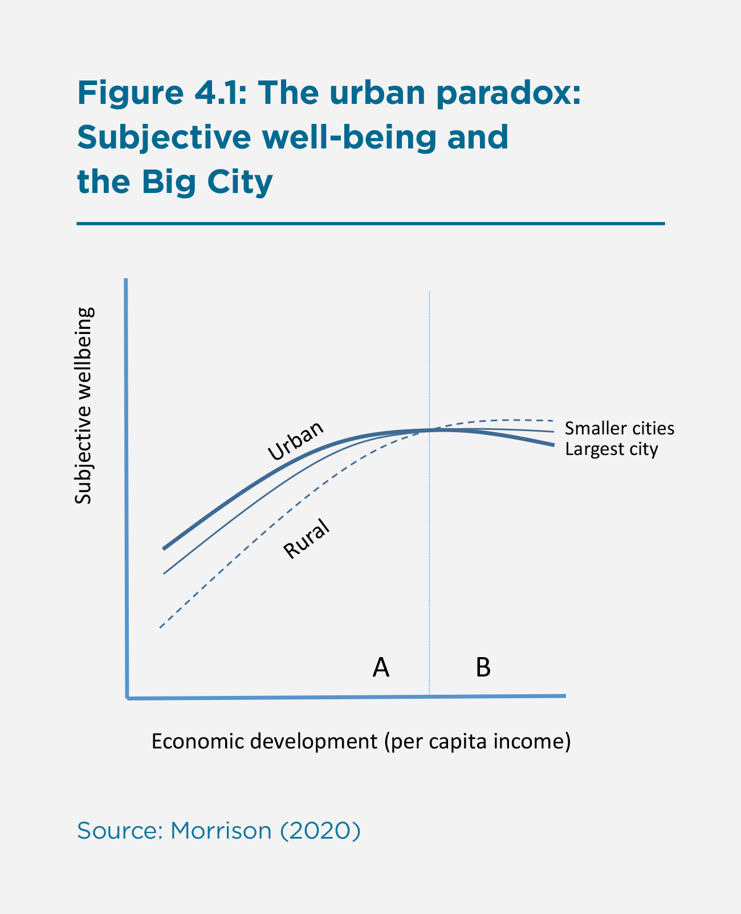
As incomes and economic opportunities in cities are higher in phase A of Figure 4.1, they are accompanied by higher levels of happiness compared to rural areas. When incomes rise and technology further evolves, and when transport and digital infrastructure improves, rural areas become more accessible and diversified. This widespread transformation in the nature of work eventually results in reduced urban-rural happiness differentials to the point where average happiness levels in rural areas, villages, and small towns approach and even exceed those of large cities. Ironically, although the large cities constitute the driving force of developed economies and are still seen as attractive places to live, their average levels of reported well-being show evidence of decline as suggested in phase B of Figure 4.1.[13] It is this phase in the relationship between rural and urban areas that has given rise to the term ‘the urban paradox.’[14]
The living environment and the composition of the population inhabiting the very large cities in developed economies have an important role in shaping their lower average well-being compared to smaller urban and rural settlements.[15] The majority of people in phase B of Figure 4.1 choose to live in urban areas because they offer a higher quality of life both in terms of employment opportunities and access to amenities and public services.[16] These urban benefits may not be distributed evenly, however, for such urbanization is typically associated with higher real costs of living.[17] Depending on their levels of income and education, an individual’s urban residence may be accompanied by lower levels of social capital[18], as well as higher levels of pollution[19], traffic congestion[20], crime[21], inequality[22], lack of green space[23], and exposure to diseases[24]. The degree to which these costs are experienced and featured in measures of well-being is likely contingent on residents’ education and associated socio-economic status.
While in developing countries the well-being advantages of the city may outweigh the disadvantages relative to settlements beyond the large city, this might not be the case for the majority of urban residents in developed countries.[25] Many residents in restructured rural areas of developed economies are no longer dependent upon farming, and the expansion of urban centres means many find themselves living and working in close proximity to metropolitan centres and able to ‘borrow’ the positive effects of much larger cities[26], while being relatively insulated from the negative effects. There may also be selection of unhappy people into cities and happy people into the countryside. For example, Veenhoven[27] found that it is the unhappier part of the countryside in the Western world that tends to move to the city.[28] In this regard, cities in developed countries typically have relatively more singles, unemployed, and migrants, which tend to reduce the average happiness levels of cities.[29]
Evidence in support of the urban-rural happiness differential may be found in a variety of regional studies. Although population size or density per hectare is not inevitably correlated with lower subjective well-being, in developed economies and several rapidly developing economies, average levels of subjective well-being have been shown to fall as population size and population density increase. Initially, the evidence came from a range of new settler developed economies including the United States[30], Canada[31], Australia[32], and New Zealand[33]. Old settler country examples include the United Kingdom[34] and Ireland[35], as well as continental Europe[36]. The phenomena have been identified in a number of individual country studies such as Germany[37], Italy[38], and The Netherlands.[39] At the same time, lower average subjective well-being is now also being observed in the largest cities in other parts of the world. Particularly significant are the more recent findings emerging from China[40] and Hong Kong[41], which suggests a phenomenon that is more broadly associated with rapid economic development.
By comparison, little is known about urban-rural happiness differentials in the developing world, and the degree to which urban-rural happiness differentials are driven by people-based and by placed-based factors is unclear. To complicate matters, the relationship between place of residence and happiness is heterogeneous in that people do not rate environmental attributes similarly.[42] In addition, certain people are more exposed to the positive (or negative) effects of cities than others. Most notably, there are differences between socio-economic groups and those at different stages in the life course. For instance, Hoogerbrugge and Burger[43] found that in the United Kingdom, students moving from rural areas to cities gain in life satisfaction, while Okulicz-Kozaryn and Valente[44] obtained that urban unhappiness does not hold for the younger generation in American cities.
Morrison[45] has argued that while urban agglomeration (in European cities) raises the income and well-being returns of those with tertiary education, the falling average levels of well-being in phase B of Figure 4.1 is primarily the result of lower well-being experienced by the larger number of less educated who have lower incomes and longer commutes, and provide support services in the large city.[46] The large city in particular provides the necessary infrastructure for realisation of returns to tertiary education as a result of the expansion of both the scale and scope of economic and cultural activities. However, the tertiary-educated in turn attract a large number of the less educated who work in the non-tradable sector supplying haircuts, massages, gardening, cleaning, brewed coffee, and other personal as well as firm-related services. The economic imperative of working locally for low wages competes with the rising price of residence close to work resulting in their much longer commute. The demand for such personal services is highly income elastic and since very large cities pay much higher wages to skilled laborers the ratio of service to educated personnel is higher than in other settlement types. The resulting gap in well-being between the tertiary and non-tertiary educated is further stretched by the joint effect of education and income on the level of social interaction in the large city, in part because the longer commute reduces time with family and leisure.[47] Since the educated are better paid and can exercise a much wider choice as to where to live, they can not only live closer to work, but also cluster geographically and thereby solidify social networks, thus enhancing their well-being. In short, the competition engendered by large city size leads to higher inequality, which translates into a wider discrepancy in average well-being.[48]
In the remainder of this chapter, we draw on the Gallup World Poll to examine the evidence in support of the stylised argument in Figure 4.1. In the process, we demonstrate empirically the way in which combined effects of resettlement and growth of the population within urban and rural settlements is associated with a change in the way people evaluate their lives. We begin with broad generalisations and gradually introduce more detail in order to reveal the complexity that underlines the general argument. In particular, we focus on two extreme cases: urban happiness in Sub-Saharan Africa and urban unhappiness in the Western world, and in so doing we explore whether urban-rural differences are driven by selection and composition effects and/or by differences in the quality of the urban and rural environment. Sub-Saharan Africa is not only one of the areas in the world with low happiness scores, but also a region in which happiness differences between the city and countryside are most pronounced in favour of city life. Do cities indeed offer more chances or is it merely hope that drives the happiness of urban Africa and are there still parts of the population better off on the countryside? Differently, the puzzle of urban unhappiness in the Western world is interesting because cities are seen as ‘the place to be’ in that they feature an attractive diversity of consumption amenities including bars, restaurants, museums, theatres, music and sport events.[49] However, the urban happiness benefits may be offset by the happiness costs for a large part of the population, such as high costs of living, longer commutes, greater inequality, social isolation, noise, and pollution. At the same time, accessibility to urban amenities and a lack of the problems associated with city life may explain the relatively high levels of happiness on the Western countryside. For both cases (Sub-Saharan Africa and the Western world), we also examine whether certain types of people are better off in cities or on the countryside.
Exploring Urban-Rural Differences in Happiness
Measuring Urban-Rural Happiness Differentials
In this chapter, we use the annual cross-sectional Gallup World Poll (GWP) data across 150 countries spanning the period 2014-2018 in order to examine urban-rural differences in happiness.[50] We use three well-being indicators that together cover the cognitive and affective dimensions of happiness:
- Life evaluation, as measured by the Cantril ladder question[51] that asks respondents to evaluate the quality of their lives on an 11-point ladder scale, with the bottom step of the ladder (0) being the worst possible life they can imagine and the highest step (10) being the best possible life.
- Positive affect, as measured by a two-item index asking respondents whether or not they frequently experienced (1) enjoyment and (2) laughter on the day before the survey.
- Negative affect, as measured by a three-item index asking respondents whether they frequently experienced (1) worry, (2) sadness, and (3) anger on the day before the survey.[52]
While positively correlated, outcomes can differ between these dimensions and therefore we conduct separate analyses for each well-being indicator.[53] When examining urban-rural differences in happiness, we use the Gallup classification based on the respondent’s self-reported type of settlement: (1) in a rural area or farm; (2) in a small town or village; (3) in a large city; (4) refused; (5) don’t know; (6) in the suburb of a large city. In our analysis, “rural” is defined as individuals in category (1) and “urban” is defined as individuals in categories (3) and (6). Following Easterlin, Angelescu, and Zweig[54], we define category (2) as “peri-urban” as it typically takes in an intermediate position between urban and rural. In line with global urbanization, more people in our sample indicate to live in an urban area (41%) than in a peri-urban area (33%) or a rural area (26%) (see Online Appendix A). We use two types of weights: sampling weights are used to improve the national representativeness of the surveys and population weights are used in cross-national analyses to account for each country’s population 15 years and over.[55]
To date most published assessments of subjective well-being by settlement type have used the respondent’s own assessment of the type of place they live in.[56] Recently, a coalition of six international organizations (the EU, FAO, ILO, OECD, UN-Habitat, and the World Bank) have developed a uniform definition of the Degree of Urbanization, which has been applied to the Gallup World Poll by overlaying the interview geotags against this geospatial layer. An overview of this method is presented in an annex to this report by Dijkstra and Papadimitriou. However, as these data are only available for the 2016-2018 period, and for 115 countries, we refrain from using this indicator in this chapter. Most importantly, for a significant number of high-income countries with more negative urban-rural differentials the new urbanization measure is not available, which may explain some of the differences between our results and the results presented in this annex. A comparison between the Degree of Urbanization measure and perceived urbanization measure is provided later in this chapter.
Urban-Rural Differences in Happiness
The three graphs in Figure 4.2 show urban-rural differences in life evaluation, positive affect, and negative affect for the various world regions, while Table 4.1 provides an overview of the number of countries with significant urban-rural differences in life evaluation, positive affect, and negative affect by world region. Countries with the most pronounced differences are listed in Table 4.2; a complete overview of urban-rural differences by country can be found in Online Appendix C.
Graph A in Figure 4.2 shows urban-rural differences in life evaluations. While the worldwide average life evaluation for the urban population is a 5.48, the worldwide life evaluation for the rural population is a 5.07; a difference of 0.41 points on the 11-point Cantril ladder. The differences between the urban and rural population are largest in East-Asia (0.56) and Sub-Saharan Africa (0.56), followed by South Asia (0.47), Southern Europe (0.46), and Latin America and the Caribbean (0.38). Only in Australia and New Zealand (-0.16), Northern and Western Europe (-0.05), and Northern America (-0.01), is the average life evaluation of the rural population higher than the average life evaluation of the urban population. These findings are in line with the results reported in Chapter 3, in which the average happiness of city residents is more often than not higher than the average happiness in a country, especially in the less happy and less affluent countries.
Table 4.1 confirms this global picture. All in all, in only 13 of the 150 surveyed countries (9%), the average life evaluation of the rural population is significantly higher than the average life evaluation of the urban population. The largest differences can be found in Lebanon (-0.41), Iceland (-0.38), the Netherlands (-0.35), New Zealand (-0.34), the United Kingdom (-0.34), and Egypt (-0.34) (See Table 4.2). None of the countries with higher life evaluation scores in rural areas can be found in the Commonwealth of Independent States (CIS), Eastern Europe, East Asia, Latin America and the Caribbean, and South Asia. At the same time, in 101 of the 150 surveyed countries (67%), the average life evaluation of the urban population is significantly higher than the average life evaluation of the rural population. However, none of the countries in this category can be found in Oceania and Northern America, while in the majority of Northern and Western European countries there is no statistically significant difference in how positively the urban and rural population evaluate their lives.
Do we find similar differences when we look at the measures of affect? When we turn to positive affect (graph B in Figure 4.2) we find that worldwide 76.3% of the urban population indicated they experienced enjoyment or laughter on the day before the survey, compared to 72.0% for the rural population. Differences in favour of the urban population were largest in South Asia (8.3%), Southern Europe (8.0%), and Sub-Saharan Africa (5.3%). Only in Northern and Western Europe, was the average positive affect of the rural population (80.0%) higher than the average positive affect of the urban population (78.2%), while in Australia, New Zealand, and Northern America there were few differences in recalled happiness the previous day, despite the average life evaluation in urban areas being higher.
In only a handful of countries (17 out of 150 countries; 11%) is the positive affect score of the rural population significantly higher than that of the urban population (Table 4.1). In contrast to the life evaluation measure, however, there is no statistically significant difference between the city and the countryside in half of the countries (75 out of 150 countries) for which sufficient information was available. This suggests that worldwide urban-rural differences in positive affect are smaller than worldwide urban-rural differences in life evaluations.[57]
Finally, for negative affect (Graph C in Figure 4.2), we find that the worldwide urban population experienced less worry, sadness, and anger the day before the survey (24.8%) compared to the rural population (27.8%). The largest urban-rural differences can be found in South Asia (8.1%) and Southern Europe (4.7%). In general, urban-rural differences in negative affect tend to be smaller than urban-rural differences in life evaluation and urban-rural differences in positive affect. In 93 of the 150 surveyed countries (62%) there was no significant difference in negative affect, while in 37 countries (25%) the urban population had a significantly lower negative affect score than the rural population.
Figure 4.2. Urban – rural differences in life evaluations, positive affect, and negative affect by world region and negative affect by world region
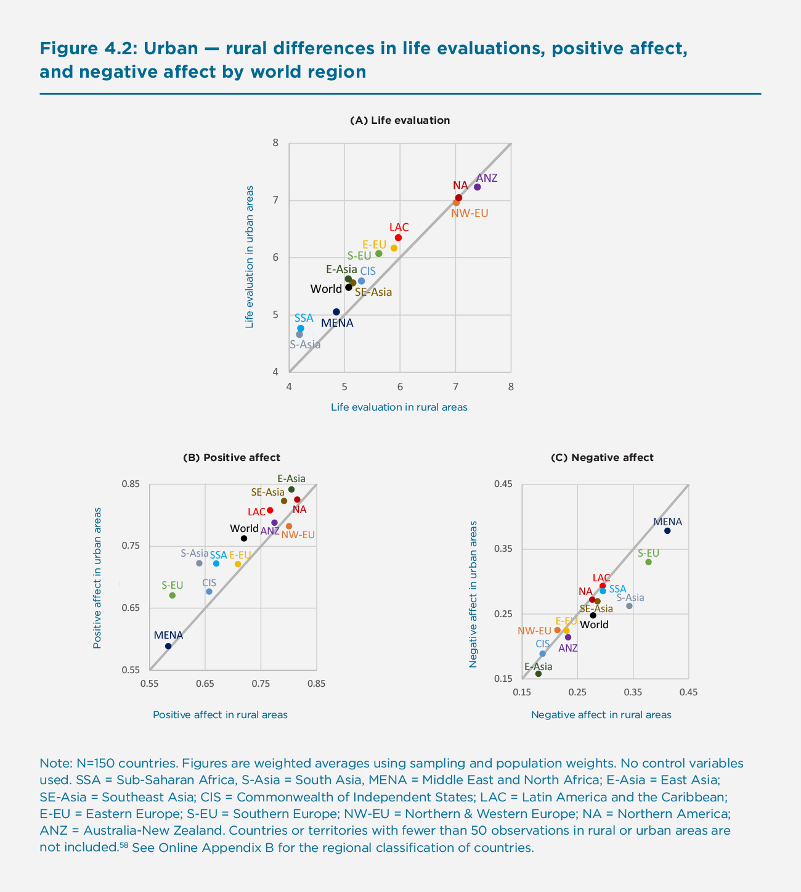
Notes: N=150 countries. Figures are weighted averages using sampling and population weights. No control variables used. SSA = Sub-Saharan Africa, S-Asia = South Asia, MENA = Middle East and North Africa; E-Asia = East Asia; SE-Asia = Southeast Asia; CIS = Commonwealth of Independent States; LAC = Latin America and the Caribbean; E-EU = Eastern Europe; S-EU = Southern Europe; NW-EU = Northern & Western Europe; NA = Northern America; ANZ = Australia-New Zealand. Countries or territories with fewer than 50 observations in rural or urban areas are not included.[58] See Online Appendix B for the regional classification of countries.
Table 4.1: Number of countries with significant urban-rural differences in life evaluation (LE), positive affect (PA) and negative affect (NA) by worldregion
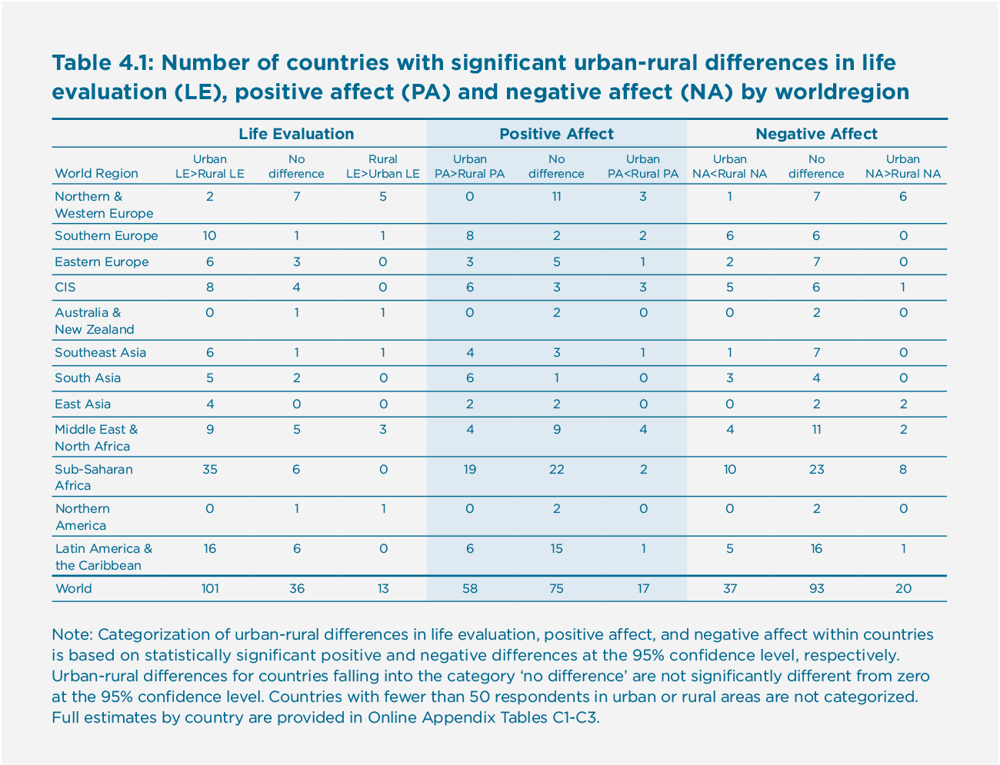
Table 4.2: Countries with most pronounced urban-rural differences in life evaluation, positive affect, and negative affect
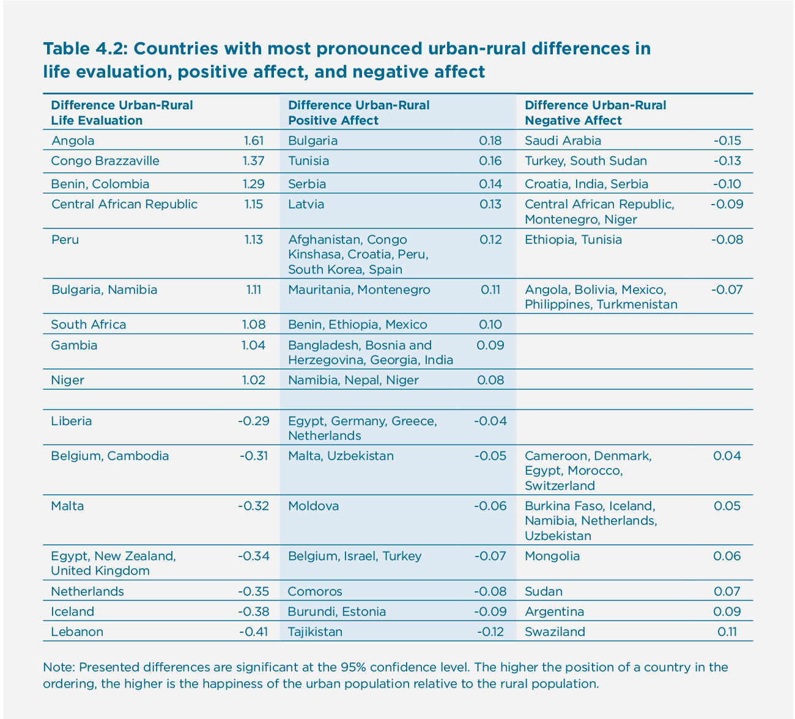
Figure 4.3 provides empirical support for the theoretical suggestions in Figure 4.1, namely that the urban advantage in happiness decreases and eventually reverses into an urban disadvantage with rising levels of economic development (GDP per capita).[59] Overall, while people are happier in urban areas than in rural areas this difference does generally not hold for (highly) developed countries.
Figure 4.3: Urban-rural differences in life evaluations by country GDP per capita
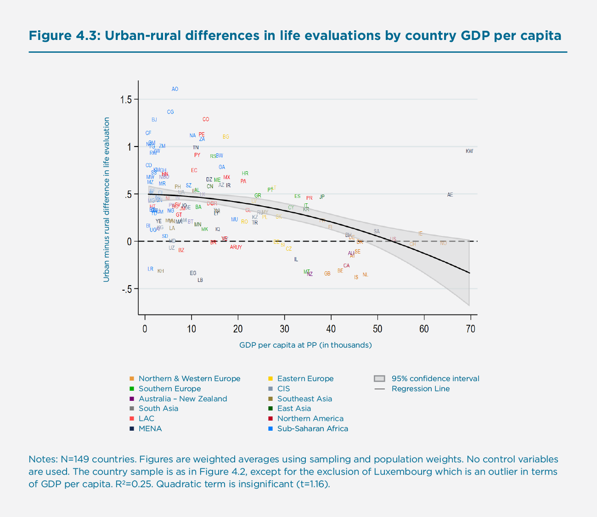
Urban-Peri-Urban and Rural-Peri-Urban Differences in Happiness
In addition to urban-rural differences in happiness, we also examined urban vs. peri-urban and rural-peri vs. urban differences in well-being. The results of most of these examinations can be found in Online Appendices C, D, and E. The life evaluation (5.29), positive affect (73.9%), and negative affect (25.7%) scores of the peri-urban population fall in between the scores of the urban and rural populations. We find few countries in which the peri-urban population return significantly higher levels of happiness than the urban population. At the same time, urban-peri-urban differences are less pronounced. We find no significant differences in 43% of the countries for the life evaluation metric, 65% for the positive affect metric, and 63% for the negative affect metric. Therefore, in the remainder of this chapter, we mainly focus on the urban-rural differences.
Alternative Definition of Urbanization
A comparison of our results with the alternative urbanization measure of Dijkstra and Papadimitriou (see Annex of this World Happiness Report) is presented in Figure 4.4 and Online Appendix F. Please note that the alternative urbanization is only available for 115 countries for the period 2016-2018. Overall, we find a strong correlation (0.75) between a country’s urban-rural life evaluation gap produced using the perceived urbanization measure and a country’s urban-rural life evaluation gap using the objective Degree of Urbanization measure. At the same time, the use of this improved urbanization measure makes the urban-rural gap slightly smaller and for some countries the urban-rural gap is contingent on which measure is used. For example, for Ivory Coast the urban-rural life evaluation gap produced using the perceived urbanization measure is 0.79, while the urban-rural life evaluation gap using the objective Degree of Urbanization measure is only 0.13. Once the degree of urbanization measure becomes available for a larger number of years and countries, future research should examine the underlying reasons for these differences.
Figure 4.4: The gap in life evaluations between urban and rural areas using the degree of Urbanization and perceived urbanization 2016-2018
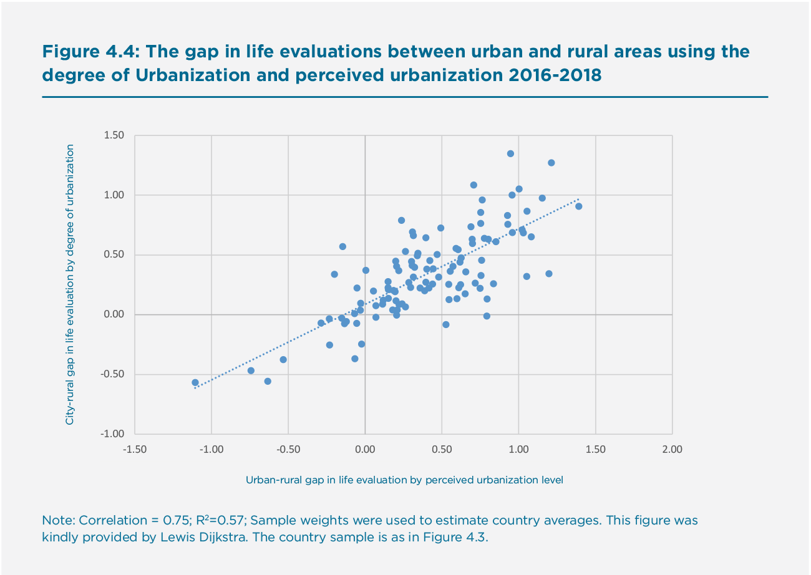
Differences in Urban-Rural Happiness over Time
Figure 4.1 implies a temporal pattern in the relative well-being of rural and urban populations to the extent that time is correlated with economic growth. Can we observe a time trend in the difference between urban-rural happiness over the short twelve-year timespan considered here? Previous literature has been mainly focused on the Western world[60] and showed that differences in the average happiness of those living in the city and countryside have been quite stable over time. In order to examine developments in other parts of the world, we utilized the Gallup World Poll data for the period 2006-2018, pooling the data for the period 2006-2011 into a single observation (due to the more limited country set before 2011 and to obtain a robust baseline level). With regards to the trends in urban minus rural differences in life evaluations, positive affect, and negative affect (see Online Appendix G, Figure G1) the following main conclusions can be drawn:
- The urban-rural difference in life evaluations and positive affect have remained the same in the past decade across the globe, but people in urban areas have become less likely to report negative affect.
- People in urban areas have become relatively better off compared with those in rural areas in Northern and Western Europe (in terms of life evaluations and positive affect), Sub-Saharan Africa (life evaluations and negative affect), South Asia, and Middle East and North Africa (negative affect).
- At the same time, people in rural areas have become relatively better off compared to people in urban areas in Eastern Europe in terms of positive affect.
- Mixed evidence is found in East Asia, Australia-New Zealand and Northern America, where the rural population has become relatively better off in terms of life evaluations while urban populations reported less negative affect.
- On a global scale, there has been a general stability in the urban–peri-urban differences and peri-urban–rural differences in happiness, with the exception that the people in peri-urban areas have become relatively better off in terms of negative affect compared with people in rural areas. These results are also presented in Online Appendix G (Figures G2 and G3).
- Time trends by country are presented in Online Appendix H.
Urban-Rural Happiness Puzzles
In the second section of this chapter, we have seen that there are considerable differences in happiness between urban and rural areas of countries and that these differences are contingent on the level of development of a country. However, pinpointing the exact reasons for these geographical differences in happiness within countries is challenging. On the one hand, geographical differences can be attributed to urban-rural differences in the quality of the living environment or imbalances between happiness advantages and disadvantages of living in certain areas of the country. On the other hand, lower levels of happiness in certain areas can also be explained by selection and composition effects, such as the fact that urban and rural areas attract and are home to different types of people. In this regard, it may very well be that urban-rural differences in happiness are explained by ‘people-based’ factors.
To explore the relative importance of higher standards of living in cities we use a Blinder-Oaxaca decomposition (see Online Appendix I)[61] that draws on several factors in order to explain the difference between urban and rural assessments of happiness in Sub-Saharan Africa. Utilizing the Gallup World Poll, we take into consideration the following ‘people’ factors and local ‘place’ factors (see Online Appendix I, Table I1 for the exact variable definitions):
People factors:
- Economic situation: annual household income, income sufficiency, and employment status
- Economic optimism: optimism about own economic situation
- Education: number of years of education
- Health: health problems and experience of pain
- Social capital: social support and civic engagement
- Safety: feelings of safety and victimhood
- Demographics: age, gender, having a partner, and having children
- Migrant: born in country or elsewhere
- Perceptions of country conditions: quality of institutions, corruption, and perceived freedom
Place factors:
- Local: Water and air quality: satisfaction with water and air quality in local area
- Local: Public infrastructure: satisfaction with infrastructure, public transportation, availability of quality healthcare, and the education system in local area
- Local: Housing affordability: perceived housing affordability in local area
- Local: Job climate: economic conditions and job market conditions in local area
- Local: Community attachment: propensity to stay in local area and satisfaction with local area
- Local: Diversity: local area is a good place to live for minorities.
- Other: We control for country and year fixed effects that may drive urban-rural happiness differentials.
Both the people and place factors subsume groups of variables and, therefore, we report their joint statistical significance. Although we try to distinguish between the people-based and place-based effects, the two are not always separable. For example, higher income and lower levels of unemployment in urban areas may be result of concentrations of higher skilled and talented people in cities (selection and composition effects) as well as better job opportunities. Likewise, we consider social capital and feelings of safety to be people-based, while it can be argued that at least part of the factors are location-bound.[62]
We focus on two extremes present in the dataset. First, we consider urban happiness in Sub-Saharan Africa and then turn to the Western world (Western Europe, Northern America, Australia and New Zealand). We conclude with a brief overview of underlying reasons for urban-rural happiness differentials in other parts of the world.
Urban Happiness in Sub-Saharan Africa
With 63% of total Sub-Saharan population of 854 million living in rural areas, Africa is currently the least urbanized continent and the only remaining continent where the rural population outnumbers the urban.[63] This is one of the reasons why Africa’s urbanization rate of 3.5% per year is the fastest in the world, having risen from about 27% in 1950 to 40% in 2015 and projected to reach 60% by 2050.[64] The agricultural sector remains the dominant livelihood for many in Sub-Saharan Africa. However, the rapid growth of the urban population stimulates economic opportunity and increases access of a rising number of people to superior infrastructure and related services.
African countries will double in population by 2050 and more than 80% of that increase will occur in cities. Africa’s largest city, Lagos, Nigeria, is predicted to expand by 77 people every hour between now and 2030.[65] By 2025 there will be 100 African cities with more than one million inhabitants, twice as many as in Latin America. Already 70% of Africans are under 30 years old, accounting for about 20% of the population, 40% of the workforce, and 60% of the unemployed. It seems that Sub-Saharan Africa is not prepared for its urban expansion and many African governments are trying to limit rural-urban migration.
Internal migration accounts for a significant proportion of urbanization in Africa with most of the urban growth projected to take place in small and intermediate cities and not in the megacities.[66] However, in spite of local exceptions[67], migration is not the primary determinant of urban growth in Sub-Saharan Africa. Instead, with a young population and high fertility rates, natural increase is the primary driver.[68] In addition, large cities are not responsible for this growth; rather the urbanization being experienced in Africa is due to the gradual accretion of existing smaller settlements and the growth of medium-sized cities and the continual redrawing of the urban map.[69]
The speed of urbanization in Africa poses a number of challenging questions when it comes to understanding the geography of happiness in Sub-Saharan Africa. The Gallup World Poll relies not on official redrawing of rural/urban boundaries, but on the respondents’ self-reported assessment of where they reside, whether urban, peri-urban, or rural. Based on these subjective assessments, we find a higher evaluation of life returned by those living in areas they classify as urban and peri-urban.
There are very real challenges to development in the African countryside (e.g., lack of basic needs such as food, drinking water, and health care) and expanding cities provide economic opportunities to move out of poverty.[70] Cities have always been seen as the places to go for jobs, services, amenities, socio-economic mobility, freedom, and happiness, and cities are associated with expectations, hopes and “urban promises”.[71] At the same time rural to urban migration is often associated with decreases in subjective well-being as a result of emotional costs of being away from one’s family, false expectations, and increasing aspirations, as documented in the South African case, for example.[72]
Why Are Life Evaluations Higher in Cities in Sub Saharan Africa
The high expectations many Africans have of cities may help to explain both the positive affect and the markedly higher life evaluations expressed by urban residents in Africa. Figure 4.5 shows the Blinder-Oaxaca decompositions for Sub-Saharan Africa, based on observations for the period 2014-2018. Of the 0.71 point difference in life evaluation difference between urban and rural areas, over 0.50 points (71%) can be statistically explained by differences in people and place characteristics. The dominant factor associated with the urban-rural differential is the better economic situation in cities (0.15 points) which is associated with their more highly educated population (0.11 points). The factor “Other” (0.15 points) particularly reflects that the poorer African nations are, on average, more rural and less happy. Other factors that favour the city are a higher level of economic optimism (0.04 points), better public infrastructure (0.03 points), higher levels of social capital (0.03 points), and better health (0.01 points). Urban-rural differences with regards to these factors are shown in Table 4.3. These other (groups of) variables are all statistically insignificant at the 5% level.[73]
Table 4.3: Life comparisons of urban and rural Sub-Saharan Africa
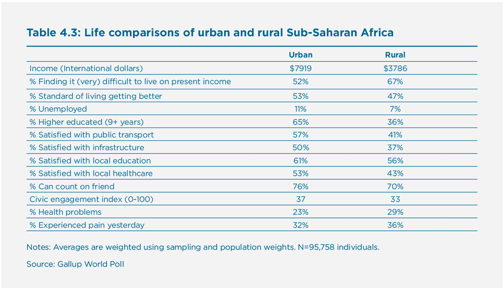
Figure 4.5: Why is life evaluation higher in urban Sub-Saharan Africa than in rural Sub-Saharan Africa? Exploring people-based and place-based factors explaining the urban-rural gap
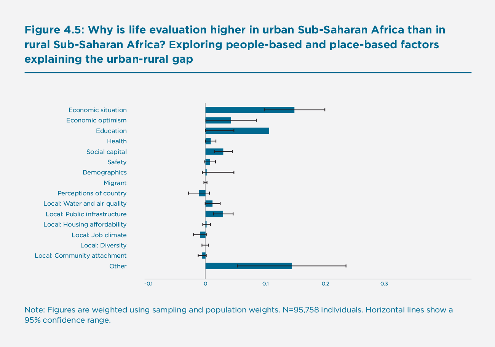
When re-estimating the Blinder-Oaxaca decomposition for positive and negative affect in Sub-Saharan Africa, we draw more or less similar conclusions, with health and community attachment playing a more important role and education a less important role in explaining urban-rural differences. These results can be found in Online Appendix J.
Whether urban-rural happiness differences in Sub-Saharan Africa are predominantly driven by people or place effects is hard to ascertain, but when we re-estimate the Blinder-Oaxaca decomposition and only include the local place factors (water and air quality, public infrastructure, housing affordability, job climate, diversity, and community attachment), we find that these local factors only account for 8% of the urban-rural happiness differential. At the same time, we do not have objective characteristics of the settlement in which people live, but only the subjective perceptions of its actual features, which are in part dependent on people-based characteristics.
The Heterogeneous Relationship Between City Living and Life Evaluation in Sub Saharan Africa
Different kinds of people fit best in different kinds of living environments, and therefore people do not necessarily rate place characteristics in a similar way.[74] This complicates our understanding of the relationship between place of residence and life evaluation. For Sub-Saharan Africa, we examined whether some groups in society are better off in the countryside than the city. We found that life evaluation levels for all major socio-demographic groups were higher when living in cities, and that this was especially marked for the more highly educated as the moderation analysis in Figure 4.6 shows. Although many of the lower educated also experience hardship in Sub-Saharan African cities, relatively speaking, they are still better off in the cities.
Figure 4.6: Urban-rural happiness differences by subgroup in Sub-Saharan Africa
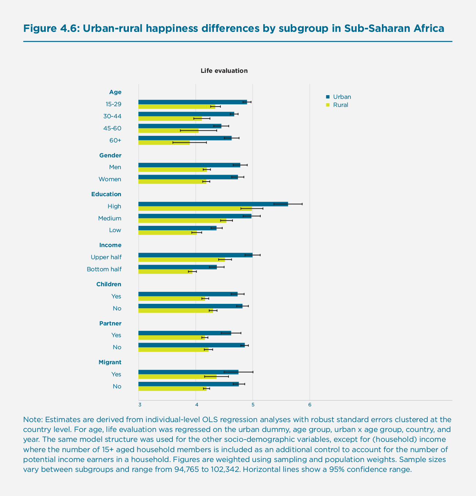
Urban Unhappiness in the Western world
When it comes to differences in happiness across the urban hierarchy the distinctive feature of the countries in Northern and Western Europe, Northern America, and Australia-New Zealand (NWAS) is not only the higher average level of happiness of the majority who live in cities, but also the equally high and sometimes higher level of happiness of those who live in rural areas.[75] The juxtaposition of these two results alongside the fact that most of the very large metropolitan centres continue to attract people and generate a disproportionate share of their country’s wealth is the reason for the urban paradox label.[76]
In contrast to much of the developing world, the absolute and relative size of the rural population in developed regions is much lower and is expected to further decline by 35% during the period 2018-2050.[77] Not only do rural areas in the NWAS countries house a small and diminishing proportion of the population, but those who live in rural areas now undertake vastly different types of work compared to those living in developing countries. Much of the ‘rural’ work is non-agricultural and is remunerated at levels which are often as high as the cities. Rural populations are also closely connected by a sophisticated transportation infrastructure to cities, meaning they are able to ‘borrow’ the positive effects of cities, and those who are no longer in paid work in rural areas are often supported by relatively generous retirement incomes, unemployment, or disability benefits.
The urban paradox described in phase B of Figure 4.1 can be largely explained by both the inequalities associated with large city growth by the fundamentally altered occupational structure and standard of living in surrounding rural areas.[78] Meanwhile, the large conurbations with which they are being compared are experiencing high levels of inequality, meaning a large proportion of their population are subject to the negative externalities of urbanization.[79] At the same time, the negative externalities associated with urban growth might still be limited because the NWAS region has relatively few megacities compared to the developing world.[80] Instead, the urban population in high-income countries is skewed towards the intermediate size classes.[81] Whereas in Europe two-third of the urban population lives in cities with fewer than 500,000 inhabitants, in Australia-New Zealand the majority of the urban population is residing in 6 medium-sized cities.[82]
Why Are People in Many Western Countries Happier Living in Rural Areas
Figure 4.7 shows the Blinder-Oaxaca decompositions for the Western world, based on 63,440 observations for the period 2014-2018. It shows the contributions of each variable group in explaining the life evaluation gap of -0.04 points between urban and rural parts of Northern and Western Europe, Northern America, Australia and New Zealand. We find that higher happiness scores in rural areas are particularly explained by higher degrees of community attachment and housing affordability and a lower percentage of single households.
These findings are consistent with the evidence presented in Hoogerbrugge and Burger for the United Kingdom (see Online Appendix K). While people in urban areas are more positive about the country, more optimistic, healthier, and higher educated than people in rural areas, the lower well-being of the majority predominates (see Table 4.4).
Table 4.4: Life comparisons of urban and rural NWAS
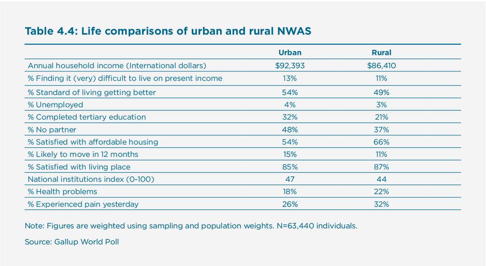
Figure 4.7: Why are life evaluations higher in rural areas in the Western world? Exploring people-based and place-based factors explaining the urban-rural gap
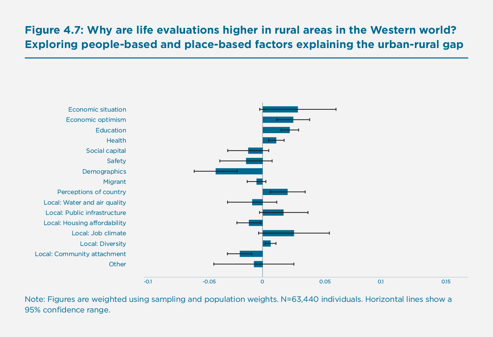
The variables we have used in the decomposition do not fully explain the urban-rural differential in the Western world (see also Online Appendix L) and it is possible that longer commutes, higher inequality, traffic congestion, and stress associated with daily urban life lowers the social capital experienced by many. In addition, issues of safety and security may contribute to the lower social capital of those in cities. At the same time, some of the same factors are likely to be valued differently in urban and rural areas. For example, social capital and being a native inhabitant (i.e., non-migrant) has a significantly stronger positive association with life evaluation in rural areas. A more elaborate discussion is beyond the scope of this chapter, but these findings do show that explaining urban-rural differentials in the Western world may involve a different set of factors than was apparent in the African case.
The Heterogeneous Relationship Between City Living And Happiness in the Western World
We also examined which groups in society are better off in the countryside than the city (see Figure 4.8). While most subgroups are similarly happy in urban and rural areas, there are three notable exceptions. A first exception is that those aged 15-29 are on average significantly happier in rural areas. Indeed, a moderation analysis reveals that those aged 15-29 tend to feel relatively happier in rural areas compared with those in the 30-60 group. However, this rural happiness advantage is contingent on education level; medium and low educated people aged 15-29 are happier in rural areas (M=7.28 and M=7.01) than in urban areas (M=6.86 and M=6.57), while the highly educated in that age group are significantly happier in urban areas (M=7.15) than in rural areas (M=6.83). These findings are consistent with findings in the literature that highly educated students in the United Kingdom experience happiness benefits from moving to the city, while less-highly educated students experience negative effects from moving to the city (see Online Appendix K). A second and related exception is that the low and medium educated are generally happier in rural areas than in urban areas. A moderation analysis reveals that, correspondingly, low educated people are relatively unhappy in urban areas compared with medium and highly educated people. Third, we find that international migrants are relatively happy in urban areas.
In summary, the quest for and achievement of education is a major inducement to urban living in both developing and developed economies. The large cities in particular provide the necessary infrastructure for realisation of returns to tertiary education as a result of the expansion of both the scale and scope of economic and cultural activities. The tertiary educated in turn attract a large number of the less educated who work in the non-tradable sector where they are potentially more vulnerable to monopsonistic[83] employment practices.[84] The demand for such personal services is highly dependent on income and since very large cities pay much higher wages to the skilled, the ratio of service to educated personnel is higher than in smaller urban settlements. However, the economic imperative of working locally for low wages competes with the rising price of residence close to work resulting in many service workers having to endure long commutes. The resulting gap in happiness is further stretched by joint effect of education and income on the level of social interaction in the large city, in part because the longer commute reduces quality time with family and leisure and lower incomes limit the scope for social interaction in an increasingly commercialised environment. Since the educated are better paid and can exercise a much wider choice as to where to live, they can not only live closer to work, but cluster geographically and thereby solidify social networks which enhance their subjective well-being.
Figure 4.8: Urban-rural happiness differences by subgroup in NWAs
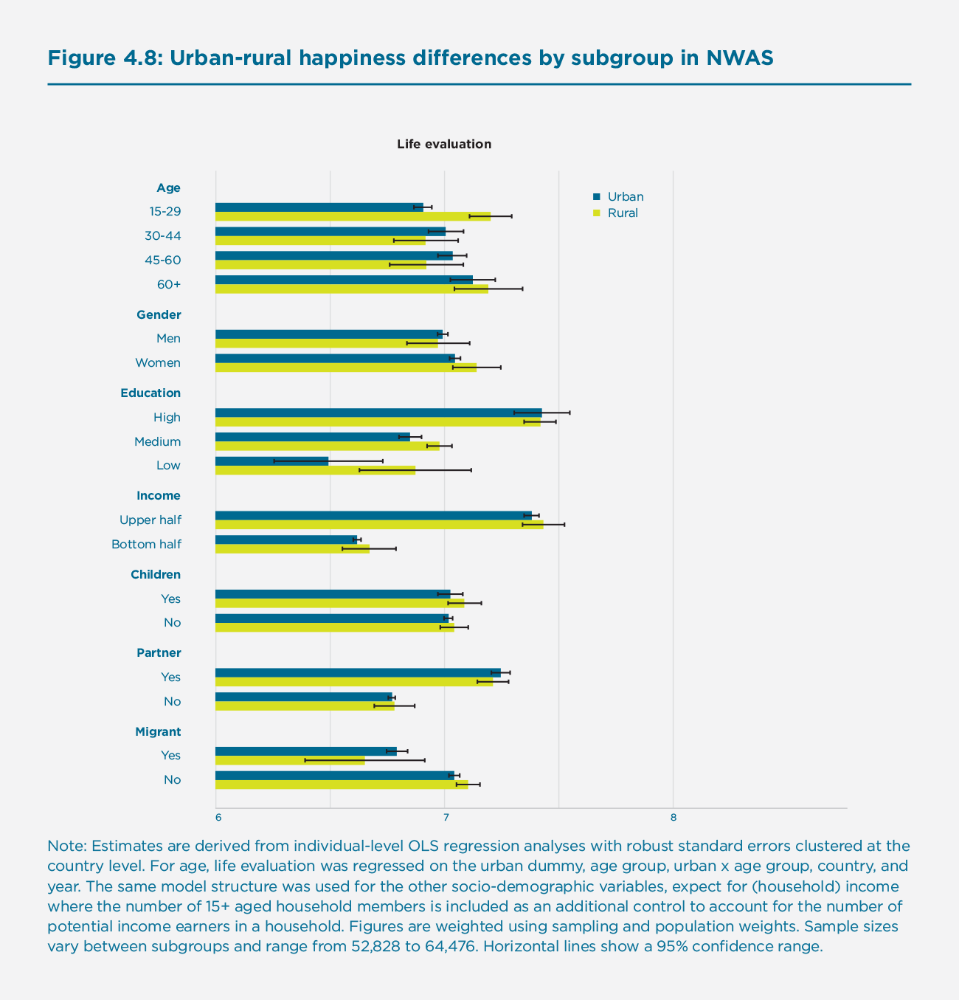
Exploring Urban-Happiness Differentials in Other Parts of the World
In our analyses on urban-rural happiness differentials, we have focused on Sub-Saharan Africa and the Western world as two extremes. However, how do these two world regions compare to other parts of the world? In order to get a basic idea of the uniqueness of the two cases that were examined, we ran the Blinder-Oaxaca decompositions for the other parts of the world, ranging from Eastern Europe (Online Appendix Figure L1) to the Middle East and North Africa (Online Appendix Figure L8). Although every region has its particularities (which need further research), a number of general conclusions can be drawn:
- In general, people-factors account for urban-rural differences more clearly than do place-factors as measured by experienced place quality. Place factors only matter to a limited extent, explaining at most just over one-third of the differences (Online Appendix Table L1).
- Economic situation and education are the important factors explaining urban-rural differentials in most regions of the world.
- The Western world is an anomaly when it comes to the nature and reasons for rural-urban differences. Not only are these differences much smaller in the NWAS region, but the factors that explain urban-rural differentials also differ, being driven by relativities which greatly favour the tertiary educated who move to cities but have less enduring effects on the majority who service them. By comparison demographics and community attachment are less important explanatory factors for the urban-rural differential in non-NWAS countries.
Concluding Remarks and Research Agenda
In this chapter, we have examined urban-rural happiness differentials across the world. In line with earlier research, we found that urban populations are, on average, happier than rural populations in that they return higher levels of happiness. Our results are robust to different measures of well-being: life evaluations, positive affect, and negative affect, although differences are most pronounced for the life evaluation measure.
The differences we found can primarily be explained by higher living standards and better economic prospects in cities, especially for those with education. At the same time, the relative importance of these place and people effects may vary from country to country and, hence invite a case-study approach. In this chapter, urban-rural differences in well-being were shown to be strongly dependent on development level, and as Figure 4.1 suggests the urbanisation experience in the more developed Western world can lead to lower rather than higher average levels of well-being in cities. In contrast to other parts of the world, in many countries in Northern and Western Europe, Northern America, and Australia-New Zealand, the relatively much smaller rural populations have higher average levels of well-being than urban populations. This can partly be explained by the fact that despite the larger urban areas having higher proportions of tertiary educated residents the tertiary educated are still in the minority. By comparison, the much larger less-educated majority face higher costs of living in cities relative to income, include a larger proportion of singles on low incomes (many of whom are students), and for a variety of reasons including reduced access to owner occupied housing and longer average commutes, experience return lower levels of well-being. The results are consistent with what we already know about the urban paradox, but local variations in such patterns warrant further research.
In this regard, our research has also shown that some groups are better able to reap the advantages of cities and are less exposed to the negative effects of cities than others. People with lower levels of education and/or lower income have fewer means of buying their way out of a poorer urban environment. In this research, we found that the urban happiness advantage is considerably larger for higher educated people than for lower educated people, both in Sub-Saharan Africa and Northern and Western Europe, Northern America, and Australia-New Zealand. Future research should in this regard examine more specifically which kind of living environment is best for which kind of people, specifically turning attention to lifestyles. Of particular importance in the Western world are the higher real housing costs the lower educated face in cities, resulting in longer commutes, which lowers time for leisure and time with family, coupled with compounding relative income effects in highly proximate environments. These are disadvantages generated from within the large conurbation rather than the result of selective in-migration from a relatively tiny rural population base.
Although the Gallup World Poll data has allowed considerable progress in understanding the geography of urban-rural differences in subjective well-being there remain several open questions. The first of these concerns the sensitivity of the urban-rural differences to the way we measure subjective well-being. The three measures we have explored here – life evaluation, and the positive and negative experiences recalled from the day before – differ not only on average across countries but from country to country, as observed earlier almost a decade ago.[85] In other words, there are place-specific as well as development-level specific differences to the way the various dimensions of well-being behave, which deserve further analysis.
Secondly, when it comes to happiness, the effect of place is conditional upon the people who live there and vice versa. Any expression of happiness from a place-specific sample is going to reflect the combined effect of the actual features of a place, subjective perceptions of its features, and how the difference between the two varies with both the characteristics of places and people themselves. Our appreciation of these interactions and how they vary with the measure of subjective well-being warrants a closer analysis, beginning with a case study approach. Related to this point and as earlier mentioned in this chapter, future research could also use more objective measures of urbanization, as presented in the Annex of this World Happiness Report. The use of such objective measure seems to be particularly relevant in understanding ‘urbanization’ in Africa and China where there is an important difference between the ‘urbanization of places’ (cities accrete to engulf rural villages), and the ‘urbanisation of people’ (people move to the cities). In both these parts of the world, it is the reclassification of formally rural areas as urban that explains much of the growth in urbanization. In other words, vast numbers of people in these countries become urbanized without moving.[86]
A related third issue begs the meaning of place itself. The way we bound place – urban and rural, for example – is often quite arbitrary.[87] Furthermore, places do not exist in isolation and are embedded within one another (cities and towns within regions within countries) and an understanding of the role of place in the context of such hierarchical clustering would benefit from more regular applications of the multi-level model. Based on several pioneering applications using other global surveys[88], the scope for multilevel modelling of the contemporary Gallup World Poll samples remains considerable.
A fourth feature, which space has prevented us from exploring in this chapter, is the relationship between average levels of happiness and the variance in happiness. There is considerable scope for extending to other countries the testing of the thesis that economic growth is inversely related to subjective well-being inequality[89] even if it does not increase average subjective well-being.[90] While there is a generally accepted negative relationship between within country inequality in well-being and the country’s level of development, there is room for extending existing work on the Gallup World Poll data.[91]
Our discussion of the urban paradox also highlights a fifth issue – namely the spatial well-being consequences of socio-economic inequality. Well-being assumes a geography as a result of two processes: spatial sorting and in-situ adaptation. Both are influenced primarily by the resources households have available, and while the market largely determines who lives where and under what conditions[92], the internal geography of well-being is heavily conditioned by the characteristics of the country itself and its level of development.[93] Both these sorting and adaptation processes await further attention.
As a sixth point, when it comes to understanding the geography of happiness within urban areas, competition for residence close to central city places results in a negative relationship between income and commuting distance.[94] As a result, the competition for accessibility has a number of unexplored implications for the spatial distribution of well-being. For this reason, we would recommend the addition of a question on duration of the commute to the questions in the World Gallup Poll as this would go some way in our understanding the non-linear well-being consequences of urban size.
A final point to emerge from our work is the role of personality and genetic predispositions and their influence on well-being.[95] The World Gallup Poll does not collect data on personality types, and therefore these attributes of individuals can not be controlled for in understanding the relationship between people’s happiness and where they live.[96] For example, do extraverted people thrive in different types of environment than introverted people, and are cities good places to live for neurotic people? It would be valuable to ask these and related questions in future research.
Bibliography
Albouy, D. (2008). Are big cities really bad places to live? Improving quality-of-life estimates across cities Working Paper National Bureau of Economic Research.
Alirol E., Getaz, L., Stoll, B., Chappuis, F. and Loutan, L. (2011). Urbanisation and infectious diseases in a globalised world. The Lancet Infectious Diseases, 11(2): 131-141.
Alonso, W. (1973). Urban zero population growth. Daedalus, 102(4), 191-206.
Arampatzi, E., Burger, M., Ianchovichina, E., Röhricht, T., & Veenhoven, R. (2018). Unhappy development: Dissatisfaction with life on the eve of the Arab Spring. Review of Income and Wealth, 64, S80-S113.
Aslam, A., & Corrado, L. (2012). The geography of well-being. Journal of Economic Geography, 12(3), 627-649.
Ballas, D. (2008). Geographical modelling of happiness and well-being. Paper presented at the BURISA 177.
Ballas, D., & Tranmer, M. (2012). Happy people or happy places? A multilevel modeling approach to the analysis of happiness and wellbeing. International Regional Science Review, 35, 70-102.
Becchetti, L., Massari, R., & Naticchioni, P. (2013). The drivers of happiness inequality: suggestions for promoting social cohesion. Oxford Economic Papers, 66(2), 419-442.
Behrens, K. & Robert-Nicoud, F. 2014. Survival of the fittest in cities: urbanisation and inequality. The Economic Journal, 124, 1371-1400.
Berry, B. J. L., & Okulicz-Kozaryn, A. (2009). Dissatisfaction with city life: a new look at some old questions. Cities, 26, 117-124.
Berry, B. J. L., & Okulicz-Kozaryn, A. (2011). An urban-rural happiness gradient. Urban Geography, 32(6), 871-883.
Berry, S., & Waldfogel, J. (2010). Product quality and market size. The Journal of Industrial Economics, 58(1), 1-31.
Blinder, A. S. (1973). Wage discrimination: reduced form and structural estimates. Journal of Human Resources, 8(4), 436-455.
Bonini, A.N. (2008). Cross-national variation in individual life satisfaction: effects of national wealth, human development, and environmental conditions. Social Indicators Research, 87, 223-236.
Botzen, K. (2016). Social capital and economic well-being in Germany’s regions: an exploratory spatial data analysis. Region, 3(1), 1-24.
Brereton, F., Clinch, P., & Ferreira, S. (2008). Happiness, geography and the environment. Ecological Economics, 65, 386-396.
Broersma, L. and Van Dijk, J. (2008). The effect of congestion and agglomeration on multifactor productivity growth in Dutch regions. Journal of Economic Geography, 8(2), 181-209.
Burger, M. J., Meijers, E. J., & Van Oort, F. G. (2014). Regional spatial structure and retail amenities in the Netherlands. Regional Studies, 48(12), 1972-1992.
Burger, M., Hendriks, M., Marlet, G., Van Oort, F., Ponds, R., & Van Woerkens, C. (2017), De geluksatlas [The Happiness Atlas], Atlas voor Gemeenten 2017, Chapter 1. Nijmegen: VOC Uitgevers
Cantril, H. (1965). The Pattern of Human Concerns. New Brunswick, NJ: Rutgers University Press.
Cardoso, R., Meijers, E., Van Ham, M., Burger, M., & De Vos, D. (2019). Why bright city lights dazzle and illuminate: A cognitive science approach to urban promises. Urban Studies, 56(2), 452-470.
Chen, J., Davis, D. S., Wu, K., & Dai, H. (2015). Life satisfaction in urbanising China: The effect of city size and pathways to urban residency. Cities, 49, 88-97.
Christian, T.J. (2012). Automobile commuting duration and the quantity of time spent with spouse, children, and friends. Preventative Medicine, 55, 215-218.
Clark, W. A. V., Yi, D., & Huang, Y. (2019). Subjective well-being in China’s changing society. PNAS.
Cummins, R. A., Davern, M., Okerstrom, E., Lo, S. K., & Eckersley, R. (2005). Report 12.1. Australian Unity Wellbeing Index. Special report on city and country living. Melbourne: The School of Psychology and Australian Centre on Quality of Life, Deakin University.
Dang, Y., Chen, L., Zhang, W., Zheng, D., & Zhan, D. (2020). How does growing city size affect residents’ happiness in urban China? A case study of the Bohai rim area. Habitat International, 102120.
Deaton, A. (2015). The Great Escape: Health, Wealth, and the Origins of Inequality. New Jersey: Princeton University Press.
Deeming, C. & Hayes, D. (2012). Worlds of welfare capitalism and wellbeing: A multilevel analysis. Journal of Social Policy, 41, 811-829.
Dunlop. S., Davies, S., & Swales, K. (2016). Metropolitan misery: why do Scots live in ‘bad places to live?’. Regional Studies, Regional Science, 3(1), 717-736.
European Commission. (2013). Quality of life in cities Flash Eurobarmeter 366. Luxembourg: Belgium: The European Union.
Easterlin, R. A., Angelescu, L., & Zweig, J. S. (2011). The impact of modern economic growth on urban-rural differences in subjective well-being. World Development, 39(12), 2187-2198.
Faggian, A., Olfert, M. R., & Partridge, M. D. (2011). Inferring regional well-being from individual revealed preferences: the ‘voting with your feet’approach. Cambridge Journal of Regions, Economy and Society, 5(1), 163-180.
Glaeser, E. (2011). Triumph of the City. Basingstoke and Oxford: Palgrave Macmillan.
Glaeser, E., Gottlie, JD. and Ziv, O. (2016). Unhappy cities. Journal of Labor Economics, 34(2), S129-S182.
Glaeser E. & Sacerdote, B. (1999) Why is there more crime in cities? Journal of Political Economy, 107(6), S225-S258.
Guneralp, B., Lwasa, S., Masundire, H., Parnell, S., & Seto, K. C. (2018). Urbanisation in Africa: challenges and opportunities for conservation. Environmental Research Letters, 13, 1-8.
Haller, M. & Hadler, M. (2006). How social relations and structures can produce happiness and unhappiness: An international comparative analysis. Social Indicators Research, 75, 169-216.
Harris, J.R. & Todaro, M.D. (1970) Migration, unemployment and development: A two sector analysis. American Economic Review, 60, 126-142
Helliwell, J. F., & Barrington‐Leigh, C. P. (2010). Measuring and understanding subjective well‐being. Canadian Journal of Economics, 43(3), 729-753.
Helliwell, J.F., Huang, H. & Wang, S. (2017). The social foundations of world happiness. In: Helliwell, J., Layard, R. & Sachs, J. (eds.) World Happiness Report 2017. New York: Sustainable Development Solutions Network.
Helliwell, J., Layard, R., & Sachs, J. (Eds.). (2012). World Happiness Report. New York: The Earth Institute, Columbia University.
Helliwell, J., Layard, R., & Sachs, J. (Eds.). (2013). World Happiness Report 2013. New York: UN Sustainable Development Solutions Network.
Helliwell, J., Layard, R., & Sachs, J. (2015). World Happiness Report 2015. New York Sustainable Development Solutions Network.
Hoogerbrugge, M.M., & Burger, M.J. (2018). Neighborhood-based social capital and life satisfaction: The case of Rotterdam, the Netherlands. Urban Geography, 39(10), 1484-1509.
Hoogerbrugge, M.M. & Burger, M.J. (2019). The urban happiness paradox. Evidence from the United Kingdom. Working Paper, Erasmus University Rotterdam.
Ifcher, J. & Zarghamee, H. (2016). Inequality of happiness: Evidence of the compression of the subjective- distribution with economic growth. In: Basu, K. & Stiglitz, J.E. (eds.) Inequality and Growth: Patterns and Policy. Vol 1. Concepts and analysis. New York: Palgrave macmillan.
Jorda, V. & Sarabia, J.M. (2015). Well-Being Distribution in the Globalisation Era: 30 Years of Convergence. Applied Research in Quality of Life, 10, 123-140.
Kahneman, D. (2011). Thinking, Fast and Slow. Macmillan.
Kahneman, D., & Deaton, A. (2010). High income improves evaluation of life but not emotional well-being. Proceedings of the national academy of sciences, 107(38), 16489-16493.
Lagas, P., van Dongen, F., van Rin, F., & Visser, H. (2015). Regional quality of living in Europe. Region, 2(2), 1-26.
Lenzi, C., & Perucca, G. (2016a). Are urbanised areas source of life satisfaction? Evidence from EU regions. Papers in Regional Science, 97(S1), S105-S122.
Lenzi, C., & Perucca, G. (2016b). Life satisfaction in Romanian cities on the road from post-communism transition to EU accession. Region, 3(2), 1-22.
Lenzi, C., & Perucca, G. (2019). Subjective well-being over time and across space. Scienze Regionali, 18(Special issue), 611-632.
Loschiavo, D. (2019). Big-city life (dis) satisfaction? The effect of living in urban areas on subjective well-being (No. 1221). Bank of Italy, Economic Research and International Relations Area.
Lu, C., Schellenberg, G., Hou, F., & Helliwell, J. F. (2015). How’s life in the city? Life satisfaction across census metropolitan areas and economic regions. In: Canada Economic Insights (pp. 11). Ottawa: Statistics Canada.
Lynn, M. & Steel, P. (2006). National differences in subjective wellbeing: The interactive effects of extraversion and neuroticism. Journal of Happiness Studies, 7, 155-165.
MacKerron, G. & Mourato, S. (2009). Life satisfaction and air quality in London. Ecological Economics, 68(5): 1441-1453.
Meijers, E. J., & Burger, M. J. (2017). Stretching the concept of ‘borrowed size’. Urban Studies, 54(1), 269-291.
Morrison, P.S. (2007). Subjective wellbeing and the city. Social Policy Journal of New Zealand, 31(July), 74-103.
Morrison, P.S. (2020). Wellbeing and the region. Handbook of Regional Science (forthcoming). Berlin: Springer.
Morrison, P.S. (2011) Local expressions of subjective well-being: The New Zealand experience. Regional Studies 45(8): 1039-1058.
Morrison, P.S. (2018). Resolving the urban paradox: Subjective wellbeing, education and the big city. Promotion of quality of life in the changing world. 16th annual meeting of the International Society for Quality-of-Life Studies. The Hong Kong Polytechnic University, Kowloon, Hong Kong.
Morrison, P.S., Papps, K. & Poot, J. (2006). Wages, employment, labour turnover and the accessibility of local labour markets. Labour Economics, 13, 639-663.
Morrison, P.S. & Weckroth, M. (2017). Human values, subjective wellbeing and the metropolitan region. Regional Studies, 52, 325-337.
Mulcahy, K., & Kollamparambil, U. (2016). The impact of rural-urban migration on SWB in South Africa. The Journal of Development Studies, 52(9), 1357-1371.
Novak, M. & Pahor, M. (2017). Using a multilevel modelling approach to explain the influence of economic development on the subjective well-being of individuals. Economic research-Ekonomska Istraživanja, 30, 705-720.
Oaxaca, R. (1973). Male-female wage differentials in urban labor markets. International Economic Review, 693-709.
Okulicz-Kozaryn, A. (2015). Happiness and Place: Why Life is Better Outside of the City. New York: Palgrave Macmillan.
Okulicz-Kozaryn, A., & Valente, R. R. (2019). No urban malaise for Millennials. Regional Studies, 53(2), 195-205.
OECD (2010). Trends in Urbanisation and Urban Policies in OECD countries: What Lessons for China? Paris: OECD Publishing.
OECD (2014). How’s Life in Your Region? Measuring Regional and Local Well-being for Policymaking. Paris: OECD Publishing.
OECD 2018. Divided Cities: Understanding Intra-urban Inequalities. Paris: OECD Publishing.
Piper, A. T. (2014). Europe’s capital cities and the happiness penalty: An investigation using the European Social Survey. Social Indicators Research, 123(1), 103-126.
Pittau, M. G., Zelli, R., & Gelman, A. (2010). Economic disparities and life satisfaction in European regions. Social Indicators Research, 96, 339-361.
Plaut, V. C., Markus, H. R., & Lachman, M. E. (2002). Place matters: Consensual features and regional variation in American well-being and self. Journal of Personality and Social Psychology, 83(1), 160.
Rentfrow, P.J. (2010). Statewide differences in personality: toward a psychological geography of the United States. American Psychologist, 65, 548-558.
Rentfrow, P.J., Gosling, S.D. & Potter, J. (2008). A theory of the emergence, persistence, and expression of geographic variation in psychological characteristics. Perspectives on Psychological Science, 3, 339-369.
Saghir, J., & Santoro, J. (2018). Urbanisation in Sub-Saharan Africa. Centre for Strategic & International Studies (CSIS), April, 1-7.
Scharf T., & De Jong Gierveld J. (2008) Loneliness in urban neighbourhoods: An Anglo-Dutch comparison. European Journal of Ageing, 5(2): 103-115.
Schwanen, T., & Wang, D. (2014). Well-being, context, and everyday activities in space and time. Annals of the Association of American Geographers, 104(4), 833-851.
Schyns, P. (2002). Wealth of nations, individual income and life satisfaction in 42 countries: A multilevel approach. Social Indicators Research, 60, 5-40.
Sheppard, E. & McMasters, R.B. (2004). Scale and Geographic Inquiry: Nature, Society, and Method. Cornwall. Blackwell Publishers.
Shields, M., & Wooden, M. (2003). Investigating the role of neighbourhood characteristics in determining life satisfaction. Melbourne Institute Working Paper, no 24/03. Melbourne: Melbourne Institute of Applied Economic and Social Research.
Smarts, E. (2012). Well-being in London: measurement and use. GLA Economics Current Issues Note 35. London: Mayor of London.
Sørensen, J. F. (2014). Rural–urban differences in life satisfaction: Evidence from the European Union. Regional Studies, 48(9), 1451-1466.
Teye, J. (2018). Urbanisation and migration in Africa. Paper presented at the Expert Group Meeting, United Nations Headquarters.
UN-DESA (2014). World urbanization prospects, the 2011 revision. Population Division, Department of Economic and Social Affairs, United Nations Secretariat.
United Nations (2019). 2018 Revision of World Urbanization Prospects. New York: UN
Valdmanis, V. G. (2015). Factors affecting well-being at the state level in the United States. Journal of Happiness Studies, 16, 985-997.
Veenhoven, R. (2000). The four qualities of life. Journal of Happiness Studies, 1(1), 1-39.
Veenhoven, R. (1994). How satisfying is rural life?, In J. Cecora (ed.), Changing Values and Attitudes in Family Households, with Rural Peer Groups, Social Networks and Action Spaces, Bonn, Germany: Society for Agricultural Policy and Rural Sociology, pp. 4–52.
Veenhoven, R., & Berg, M. (2013). Has modernization gone too far? Happiness and modernity in 141 contemporary nations. International Journal of Happiness and Development, 1(2), 172-19.
Völker, Beate, & Flap, Henk. (2007). Sixteen million neighbors. A multilevel study of the role of neighbors in the personal networks of the Dutch. Urban Affairs Review, 43(2), 256–284.
Winters, J. V., & Li, Y. (2017). Urbanisation, natural amenities and subjective well-being: Evidence from US counties. Urban Studies, 54(8), 1956-1973.
World Bank (2009). World development report 2009. Reshaping economic geography. Washington DC: The International Bank for Reconstruction and Development/The World Bank.
Endnotes
In this chapter, the word ‘happiness’ is used as an umbrella term, including both cognitive evaluations (life evaluation) and emotional evaluations (positive affect and negative affect) (see also Veenhoven, 2000). ↩︎
Easterlin et al. (2011). ↩︎
United Nations (2019). ↩︎
Africa and Asia are home to nearly 90% of the world’s rural population. India has the largest rural population (893 million), followed by China (578 million). Asia, despite being less urbanized than most other regions today, is home to 54% of the world’s urban population, followed by Europe and Africa (13% each). ↩︎
Following the Human Development Report, a developing country (or a low and middle income country (LMIC), less developed country, less economically developed country (LEDC), or underdeveloped country) is a country with a less developed industrial base and a low Human Development Index (HDI) relative to other countries. ↩︎
Ibidem. ↩︎
Deaton (2015). ↩︎
Veenhoven & Berg (2013); World Bank (2009); ↩︎
See the argument developed by Behrens & Robert-Nicoud (2014). ↩︎
Easterlin et al. (2011). ↩︎
Cantril (1965). ↩︎
Harris & Todaro (1970). ↩︎
Several international reviews have kept this issue in front of policy makers: Albouy, 2008; European Commission, 2013; Lagas, Van Dongen, Van Rin, & Visser, 2015; OECD, 2014. Contemporary geographic variations in subjective well-being are regularly summarized in the World Happiness Reports (Helliwell, Layard, & Sachs, 2015; Helliwell, Layard, & Sachs, 2012; Helliwell, Layard, & Sachs, 2013). ↩︎
The term ‘urban paradox’ has been used in related contexts to refer to the joint presence of dynamic growth and social exclusion in urban regions but it is used in Morrison (2020), to the discordance between the popularity of cities to live and their lower well-being levels (Hoogerbrugge & Burger, 2019) and here to refer to the apparent contradiction between the higher productivity and growth of urban centers in combination with being an attractive location to live and their lower average level of well-being; see also OECD (2010). ↩︎
Okulicz-Kozaryn (2015). ↩︎
Faggian et al. (2012); Glaeser et al. (2016). ↩︎
E.g., Morrison (2011); Glaeser et al. (2016). ↩︎
E.g., Scharf & De Jong Gierveld (2008); Sørensen (2014). ↩︎
E.g., MacKerron & Mourato (2009). ↩︎
E.g., Broersma & Van Dijk (2008). ↩︎
E.g., Glaeser & Sacerdote (1999). ↩︎
E.g., Graham & Felton (2006). ↩︎
E.g., MacKerron & Mourato, 2013. ↩︎
E.g., Alirol (2008). ↩︎
Part of the popularity of cities in the rich countries may simply be a focusing illusion (cf. Kahneman, 2011). Following Okulicz-Kozaryn (2015), individuals often underestimate the happiness costs of living in cities, while they overestimate the happiness advantages of living in cities. Indeed, although employment opportunities and access to amenities are some of the perceived happiness advantages of cities, these urban rewards are not necessarily available everywhere and for everyone (Cardoso et al., 2018). According to Cardoso (2018), ‘bright city lights can dazzle as well as illuminate’. While the potential happiness advantages of urban agglomeration are evident across different periods and places, the outcomes for individuals can be extremely diversified. People may expect to profit from the happiness advantages of cities, but in the end may predominantly suffer from its happiness disadvantages. ↩︎
Alonso (1973), Meijers & Burger (2017). ↩︎
Veenhoven (1994). ↩︎
Yet, Italian evidence suggests that city size is more strongly associated with the unhappiness of longer-term residents (Loschiavo, 2019). ↩︎
In part, this effect is driven by urban households who have lived in the city all their lives. ↩︎
Berry & Okulicz-Kozaryn (2009, 2011); Glaeser, Gottlieb, & Ziv (2016); Valdmanis (2015). ↩︎
Lu, Schellenberg, Hou, & Helliwell (2015). ↩︎
Cummins, Davern, Okerstrom, Lo, & Eckersley (2005); Shields & Wooden (2003). ↩︎
Morrison (2007, 2011). ↩︎
Ballas (2008), Ballas & Tranmer (2012), Smarts (2012), Dunlop, Davies, & Swales (2016), Hoogerbrugge & Burger (2019). ↩︎
Brereton, Clinch, & Ferreira (2008). ↩︎
Aslam & Corrado (2012); European Commission (2013); Lenzi & Perucca (2016a; 2016b); Piper (2014); Pittau, Zelli, & Gelman (2010). ↩︎
Botzen (2016). ↩︎
Lenzi & Perucca (2019). ↩︎
Burger et al. (2017). ↩︎
Chen, Davis, Wu, & Dai (2015); Clark, Yi, & Huang (2019); Dang et al. (2019). ↩︎
Schwanen & Wang (2014). ↩︎
Plaut et al. (2002). ↩︎
Hoogerbrugge & Burger (2019). ↩︎
Okulicz-Kozaryn (2018). ↩︎
Morrison (2018). ↩︎
Morrison (2020). ↩︎
See for example Loschiavo (2019). ↩︎
Behrens & Robert-Nicoud (2014). ↩︎
Barry & Waldfogel (2010); Burger et al. (2014). ↩︎
See Appendix for an overview of countries included in the analysis ↩︎
Cantril (1965). ↩︎
Respondents are excluded from analysis when not answering all items on the positive affect index or negative affect index. ↩︎
Kahneman & Deaton (2010). ↩︎
Easterlin et al. (2011). ↩︎
The creation of population weights involved two steps. First, to account for sample size differences between countries and years, we adjusted the sampling weights so that each country has the same weight in each year (one-country-one-vote). Next we multiplied the total population aged 15+ in each country by the one-country-one-vote weight. Total population aged 15+ is equal to the total population minus the amount of population aged 0-14. Data are taken from the World Development Indicators (WDI) released by the World Bank. Specifically, the total population and the proportion of population aged 0-14 are taken from the series “Population ages 0-14 (% of total)” and “Population, total” respectively from WDI. Kosovo, Northern Cyprus, Somaliland, and Taiwan Province of China lack data in WDI and are therefore not included in the analyses. ↩︎
For exceptions, see e.g. Morrison (2007; 2011). ↩︎
We find a positive correlation (0.44) between urban-rural differences based on life evaluation and urban-rural differences based on positive affect. ↩︎
The excluded countries/territories are Hong Kong, Hungary, Lesotho, Palestinian Territories, Qatar, Singapore, and Trinidad and Tobago. ↩︎
We find similar differences when we replace GDP per capita by average life evaluation. These results are available upon request. ↩︎
E.g., Berry & Okulicz-Kozaryn (2009); Hoogerbrugge & Burger (2019). ↩︎
See Blinder (1973) and Oaxaca (1973). This decomposition analysis allows us to examine group differences in an outcome variable and has been more recently used in studies on subjective wellbeing (e.g. Helliwell & Barrington-Leigh, 2010; Becchetti et al., 2013; Arampatzi et al., 2018). ↩︎
Völker, 2007; Hoogerbrugge & Burger (2018). ↩︎
Sub-Saharan Africa (shortened to SSA or Africa for variety in our text) includes the following countries: Angola, Benin, Botswana, Burkina Faso, Burundi, Cameroon, Central African Republic, Chad, Comoros, Congo Brazzaville, Congo Kinshasa, Djibouti, Ethiopia, Gabon, Gambia, Ghana, Guinea, Ivory Coast, Kenya, Lesotho, Liberia, Madagascar, Malawi, Mali, Mauritania, Mauritius, Mozambique, Namibia, Niger, Nigeria, Rwanda, Senegal, Sierra Leone, Somalia, South Africa, South Sudan, Sudan, Swaziland, Tanzania, Togo, Uganda, Zambia, Zimbabwe. ↩︎
UN-DESA (2014); Despite its rapid rate of urbanisation Africa is not expected to have over half its population classified as urban for at least another 20 years (by comparison Asia’s urban population is projected to surpass its rural population within five years). ↩︎
According to data collected by the United Nations Department of Economic and Social Affairs between 2010 and 2015, Rwanda has the highest average annual rate of change in its urban population at 3.69% per year, an increase of more than 1.3 million over the five year period. Burkina Faso comes third after Laos with a 3.03% change per year. Despite this rapid growth, both African countries remain largely rural – only 28% of Rwandans and 29% of Burkinabés live in urban areas. ↩︎
Teye (2018). ↩︎
Mulcahy & Kollamparambil (2016). ↩︎
Teye (2018). ↩︎
Ibidem, p. 1 ↩︎
Teye (2018). ↩︎
Guneralp et al. (2018). ↩︎
Mulcahy & Kollamparambil (2016). ↩︎
The unexplained part of the Blinder-Oaxaca decomposition analysis accounts for the remaining difference of 0.2 points out of 0.71 points difference and can be attributed to excluded variables as well as systematic differences in the estimated value of coefficients between urban and rural areas. Not all relevant factors explaining urban-rural differences (e.g., traffic and travel satisfaction) may have been included in the model, and not all concepts have been captured fully with the variables available in the Gallup World Poll (e.g., for social capital an indicator of loneliness was missing). Although it is possible that the relative importance of factors associated with happiness may vary between urban and rural areas, we only find housing affordability differently valued in cities compared to the countryside. ↩︎
Plaut et al. (2002). ↩︎
However, it should be noted that in NWAS most people live in peri-urban areas. Hence, peri-urban – urban differences and peri-urban – rural differences ↩︎
Our use of the term ‘urban paradox’ is not unique. The term is also used to contrast simultaneous dynamic growth the social exclusion. For example, in a set of forces directly related to well-being the OECD notes that, “most urban areas in OECD countries appear to be characterised by high concentrations of wealth and employment, associated with leading sectors and the focal points of their national economies, they also tend to concentrate a high number of unemployed residents.” As they point out, wealth is not adequately translated into job creation and while employment and employment growth are typically higher in cities, urban areas also contain disproportionate numbers of people who are either unemployed or inactive (or who work in the informal economy). See also https://www.oecd.org/urban/roundtable/45159707.pdf p. 191. ↩︎
United_Nations (2019, p. 18). By comparison, the rural population of the less developed regions has continued to grow, from 1.4 billion in 1950 to 3.1 billion in 2018, more than doubling over those 64 years (Ibid). The UN has pointed out that in 2018 the ‘more developed regions’ housed 0.99 billion people while the less developed regions more than three times that number at 3.23 (World urbanisation prospects , table 11, p. 9). And the rate of change expected 2018-2030 is only 0.46% for ‘more developed regions’ compared to 2.03 in less developed regions or 4.41 times as fast. Even so, in less than a decade, by 2030 the percentage urban in less developed regions will still only by 56.7% compared to 81.4% in developed (United Nations, 2019, Table 1.3, p. 11). ↩︎
Alternatively, our results suggest that in poor countries there is a spatial disequilibrium, but in rich countries this has been eliminated by migration. More specifically, it can be argued that individuals move from areas of low utility to areas of high utility (Glaeser et al., 2016; Winters & Li, 2017). When people move from places with lower levels of utility to places with higher levels of utility, wages and housing prices will adjust in such way that spatial equilibrium will be reached. ↩︎
OECD (2018). ↩︎
See United Nations (2019). In approximately half of OECD countries, more than 40% of the national GDP is produced in less than 10% of all regions, which account for a small share of the country’s total surface and a high share of the country’s population (OECD, 2010) . ↩︎
United Nations (2019). ↩︎
Ibidem. ↩︎
A monopsony means that the employer has buying power over their potential employees, particularly providing them wage-setting power and often leading to underpayment. ↩︎
Morrison et al. (2006). ↩︎
Deaton (2013), p. 52. ↩︎
See e.g. Chen et al. (2015) and Teye (2018). ↩︎
Sheppard & McMasters (2004). ↩︎
Bonini (2008); Schyns (2002); Deeming & Hayes (2012); Novak & Pahor (2017). ↩︎
Ifcher & Zarghamee (2016). ↩︎
Jorda & Sarabia (2015). ↩︎
Helliwell et al. (2017). ↩︎
Behrens & Robert-Nicoud (2014). ↩︎
Haller & Hadler (2006). ↩︎
Christian (2012). ↩︎
E.g. Lynn & Stell (2006). ↩︎
Rentfrow et al. (2008); Rentfrow (2010). ↩︎